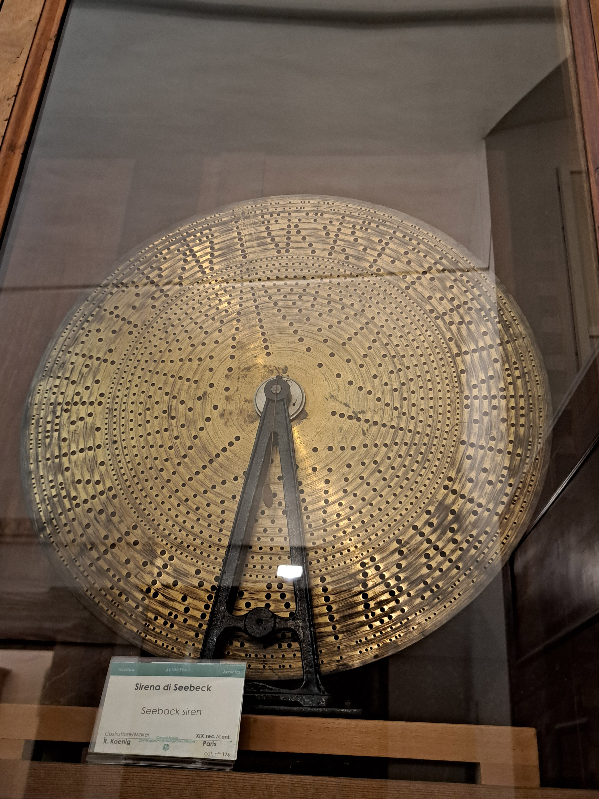

Piste concentriche e a gruppi calibrate sull'osservazione visiva del disco in ottone
Indicatore rosso: ugello dell'aria · Cerchio tratteggiato: raggio attivo

Originale in ottone (R. Koenig, Parigi) · Foto dal museo